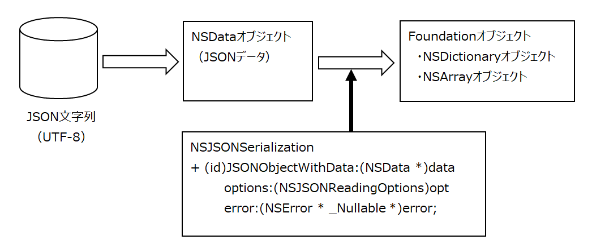
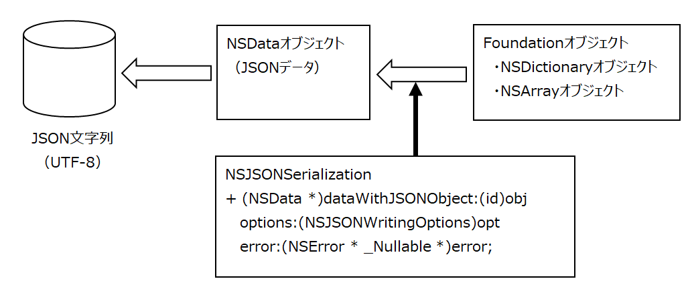

JSON形式ファイルの操作
Objective-Cの配列オブジェクト/辞書オブジェクト及び両者の組み合わせは、JSON形式のテキストに変換することができる。
操作は次の二つである
・JSON形式のテキストを読み込んで配列オブジェクト/辞書オブジェクトに変換する
・配列オブジェクト/辞書オブジェクトをJSON形式のテキストに書き出す
JSON形式のデータ構造
[ value, value, ... ] → 配列（大括弧で囲む）
{ key : value, key : value, ... } → 辞書（中括弧で囲む、キーと値はコロンで区切る）
配列の要素を辞書にすることで、ファイルのレコードやデータベースのテーブルを表すことができる。
[ { key : value, key : value, ... } ,
{ key : value, key : value, ... } , ... ]
要素のデータ型
key および Value のリテラル値はダブルコーテーションで囲む。値はNSStringオブジェクトに変換される。（数値リテラルは内部的にはNSTaggedPointerString型になるが、NSStringとして扱われる）
辞書のkey を数値リテラルで定義したときは注意が必要。作成された辞書オブジェクトのキーはNSString型になるため、NSNumber型の値をキーにしても読み込めない。NSString型への変換が必要となる。
実装方法
JSONファイルの作成：大相撲関取の情報（オブジェクトの配列とする）
読み込み処理
JSON形式のテキストを読み込んでオブジェクト（配列や辞書）に変換する

UTF-8形式のJSONデータファイルを読み込み辞書の配列を作成する。
書き出し処理
オブジェクト（配列や辞書）をJSON形式のテキストに書き出す

辞書の配列をUTF-8形式のJSONデータファイルへ書き出す
[参考] テキストの文字コード
JSONオブジェクトを作成するNSJSONSerializationクラスは、入力のNSDataオブジェクトのテキストがUTF-8でエンコードされていることを前提とする。
それ以外の文字コードのテキストを扱う場合は、JSONオブジェクト作成の前後で文字コードをUTF-8に変換する必要がある。
Shift_JIS形式のJSONデータファイルを読み込み辞書の配列を作成する。
辞書の配列をShift_JIS形式のJSONデータファイルへ書き出す